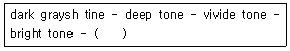
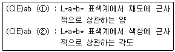
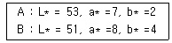
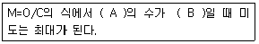

컬러리스트산업기사 (2006-08-16 기출문제)
1과목: 색채심리
1. 색채와 모양에 대한 공감각적 연구를 통해 색채와 모양의 조화로운 관계성을 추출한 사람은?
- 이텐
- 뉴턴
- 카스텔
- 로버트 플러드
(정답률: 알수없음)

2. 자연스럽고 연속적 리듬감이 있는 5색 배색을 만들기 위해 다음과 같이 색조를 선택하였다. ( )에 가장 적절한 색조는?

- light grayish tone
- soft tone
- grayish tone
- pale tone
(정답률: 알수없음)
3. 다음 중 효과적인 색채 배색이 아닌 것은?
- 꽃을 돋보이게 하기 위하여 꽃병은 명도가 높은색을 선택한다.
- 레몬은 어두운 색의 그릇에 담는 것이 돋보인다.
- 미술 진열품의 색이 강한 경우 배경을 무채색으로 한다.
- 얼굴색을 밝게 보이기 우하여 짙은 색 상의를 입는다.
(정답률: 알수없음)
4. 한국의 전통적인 오방위와 색표시가 잘못된 것은?
- 동쪽 - 청색
- 남쪽 - 황색
- 북쪽 - 흑색
- 서쪽 - 백색
(정답률: 알수없음)
5. 다음 설명 중 옳은 것은?
- 색채의 인접부분이 강하게 나타나는 현상이 계시 대비이다.
- 대비효과는 색차와 관계가 없다.
- 동화효과는 줄무늬와 같이 배경색의 면적이 작을때 일어난다.
- 인접색에 가까운 것으로 느껴지는 현상이 연변대비이다.
(정답률: 알수없음)
6. 대상의 표면색에 대한 무의식적 추론에 의해 결정되는 색채를 무엇이라 하는가?
- 양성 잔상색
- 진출색
- 기억색
- 표현색
(정답률: 알수없음)
7. 다음 중 색채치료에 대한 설명으로 잘못된 것은?
- 질병을 국소적으로 보지 않고 전체적으로 자연치유력을 높이는 보완 치료법
- 색채치료는 인간의 조직활동을 회복시켜 주거나 억제하지만 동물에게는 효과가 검증되지 않음
- 과학적인 현대의학의 장점을 살리는 동시에 자연적인 면역력을 증강시키는 것
- 고유한 파장과 진동수를 갖고 있는 에너지의 형태인 색채 처방과 반응 연구
(정답률: 알수없음)
8. 다음 중 색채선호에 영향을 미치는 요인으로 가장 거리가 먼 것은?
- 지능
- 연령
- 기후
- 소득
(정답률: 알수없음)
9. 화장품 회사에서 색조화장품 개발을 위한 조사방법으로 적절하지 않은 것은?
- 개발하려는 신제품 개념에 대한 명료화
- 제품 소비자의 연령 및 사회 문화적 배경에 대한 탐색
- 조사자 편의에 의한 표본 집단의 선정
- 제품소비자 모집단에 대한 명확한 이해
(정답률: 알수없음)
10. 분리효과에 의한 배색에서 분리색으로 주로 사용되는 색은?
- 무채색
- 두색의 중간색
- 명도가 강한색
- 채도가 강한색
(정답률: 알수없음)
11. 몸의 피로를 풀어주고, 명쾌성은 부족하나 신선한 의욕의 감정을 연상시키는 색상은?
- 흰색
- 초록
- 파랑
- 보라
(정답률: 알수없음)
12. 성인과 아동의 색채 선호도에 대한 설명으로 맞는 것은?
- 일반적으로 성인의 선호색은 녹색이다.
- 남성들은 비교적 어두운 톤을 선호하고 여성의 경우는 밝고 맑은 톤을 선호한다.
- 아기들이 가장 좋아하는 색은 빨강과 노랑으로 단파장 계열이다.
- 성인이 되면서 장파장의 녹색을 점차 좋아하게 된다.
(정답률: 알수없음)
13. 국제 언어로서의 색과 예가 잘못 연결된 것은?
- 노랑 - 장애물 또는 위험물의 경고
- 빨강 - 소방기구
- 녹색 - 구급장비, 상비약
- 파랑 - 수위 조절 및 안전지역
(정답률: 알수없음)
14. 다음 중 배색에 따른 강조색의 사용이 바르지 않은 것은?
- 어두운 톤끼리 배색되어 있을 때 고명도의 선을 삽입하여 긴장감을 주었다.
- 주조색과 보색관계에 있는 색을 강조색으로 사용하였다.
- 보색관계에 있는 색들 사이에 무채색을 넣어 이미지를 강화시켰다.
- 무채색과 저채도의 색이 배색되어 있을 때 고채도의 선을 넣었다.
(정답률: 알수없음)
15. 다음은 색채의 조절에 대한 심리효과를 이용한 것이다. 적절치 않은 것은?
- 실내온도가 높은 작업장에서는 한색계통을 주로 사용한다.
- 방의 방향에 따라 남향과 서향에는 차가운 색 계통을, 북향이나 동향에는 따뜻한 색 계통을 사용 하면 효과적이다.
- 보라는 혈압을 낮게 하고, 빨강의 보색잔상을 막아주므로 병원내의 색채로 적당하다.
- 작업장에서는 무거운 물건을 밝은 색으로 도장하여 작업능률을 높일 수 있다.
(정답률: 알수없음)
16. 바닷가, 도시, 분지에 위치한 도시의 집합주거 외벽의 색채 계획시 고려사항이 아닌 것은?
- 건설사의 기업색채
- 기후적, 지리적 환경
- 건축물의 형태와 기능
- 주변 건물과 도로의 색
(정답률: 70%)
17. 빨간색 원을 보다가 흰 벽을 보면 청록색 원이 보이는 현상은?
- 페흐너 효과
- 색채의 항상성
- 음성적 잔상
- 양성적 잔상
(정답률: 알수없음)
18. 메슬로우(Maslow)의 욕구 단계에 해당하지 않는 것은?
- 생리적 욕구
- 사회적 욕구
- 자아실현 욕구
- 필요의 욕구
(정답률: 알수없음)
19. 강조 효과에 의한 배색으로 맞는 것은?
- 엑센트 컬러는 강조하는 포인트를 부각시키기 위해 같은 계열의 색상을 사용하여 효과를 준다.
- 단조로운 배색에 대비되는 색상이나 톤으로 포인트를 주어 전체의 상태를 돋보이게 하는데 사용하는 기법이다.
- 전체적으로 저채도인 회색기미의 톤 등에 대해서 같은 저채도의 색으로 강조효과를 준다.
- 전체적으로 같은 톤의 배색을 사용하여 시선을 끌기 위한 강조를 하는 것이다.
(정답률: 알수없음)
20. 하나의 색상은 긍정적 연상과 부정적 연상을 모두 가지고 있으므로 마케팅 전략을 위해서는 부정적인 연상도 잘 알고 있어야 한다. 부정적 연상으로 '유령의, 영적인, 추운, 텅 빈' 의 이미지를 갖는 것은?
- 검정
- 흰색
- 보라
- 회색
(정답률: 알수없음)
2과목: 색채디자인
21. 색채는 각각 특정한 사물과 연관되어 인식되기도 하는데 예를 들어 '빨간색'을 보았을 때 '사과'를 떠올리는 것을 색채심리 용어로 무엇이라 하는가?
- 색채 환상
- 색채 기억
- 색채 연상
- 색채 복사
(정답률: 알수없음)
22. 제품의 색채 디자인에 있어서 색채 선정시 사용 면적과 주용 사용 목적에 따라 사용할 색을 제 종류로 분류한 것으로 맞는 것은?
- 주조색, 보조색, 강조색
- 주요색, 보조색, 강한색
- 주조색, 보강색, 강조색
- 주조색, 보조색, 강한색
(정답률: 알수없음)
23. 코카콜라사는 마케팅 전략의 일환으로 저칼로리를 강조하는 다이어트 콜라병에는 흰 바탕에 빨간 줄무늬를 넣고, 카페인이 없는 콜라병에는 금색을 사용했다. 이러한 색채 디자인은 어떤 색채마케팅 방식을 활용한 것인가?
- 환경친화적 전략
- 제품통합화 전략
- 제품차별화 전략
- 자동화 전략
(정답률: 알수없음)
24. 색채연구가인 프랑스의 '장 필립 랑크로'가 프랑스와 일본 등에서 조사 분석하여 국가 전체의 아이덴티티를 구축한 연구는?
- 유행색 연구
- 공공의 색 연구
- 지역색 연구
- 패션색 연구
(정답률: 알수없음)
25. 다음 중 아르누보와 관련이 없는 것은?
- 야수파의 영향을 받은 강렬한 색조
- 파스텔 색조
- 꽃의 양식, 물결 양식
- 앙리 반 데 벨데
(정답률: 알수없음)
26. 실내공간디자인에 관한 설명 중 잘못된 것은?
- 서로 대립되는 형태, 색채는 활기있는 분위기를 조성한다.
- 재료와 조명은 쾌적성을 확보해야 한다.
- 보조색은 공간의 기본적인 분위를 정하게 된다.
- 벽조다 어두운 색의 천장을 공간을 낮아 보이게 한다.
(정답률: 알수없음)
27. 르네상스 기독교 고전예술의 반작용으로 프랑스에서 유행한 화려하고 사치스러운 장식과 색채의 귀족예술이 특징인 것은?
- 바로크
- 로코코
- 사실주의
- 아르데코
(정답률: 알수없음)
28. 광고 캠페인 전개 초기에 소비자의 호기심을 불러 일으키기 위해 단계별로 조금씩 노출시키는 광고는?
- 티저 광고
- 팁온 광고
- 패러디 광고
- 포지셔닝 광고
(정답률: 알수없음)
29. 디자인의 조건에 관한 내용으로 타당하지 않은 것은?
- 합목적성은 작품의 제작에 있어 실제의 목적에 알맞도록 하는 것을 의미한다.
- 심미성은 형태, 색채, 재질의 아름다움을 나타내는 것이다.
- 경제성은 최상의 디자인을 창조하기 위해 인적, 물적 자원을 최대한 투입하는 것이다.
- 친자연성은 생태학적으로 건강한 환경을 구축하는 것이다.
(정답률: 알수없음)
30. 패션 디자인 분야에 활용되는 유행 예측색은 실 시즌 보다 어는 정도 앞서 제안되는가?
- 6개월
- 12개월
- 18개월
- 24개월
(정답률: 알수없음)
31. 오피스 컬러 플래닝의 직접적인 기대효과로 적합하지 않은 것은?
- 작업 효율의 향상
- 쾌적성의 배려
- 공간이미지 향상
- 관리비용 절감
(정답률: 알수없음)
32. 중국의 선호색을 고려하여 빨간색으로 휴대폰을 디자인한 것은 색채 기획의 방법 중 어떤 점을 고려한 것인가?
- 문화권별 색채 선호를 고려한 기획이다.
- 개인적인 색채 선호를 고려한 기획이다.
- 값에 까라 선호되는 색채를 고려한 기획이다.
- 사용 연령대의 선호색채를 고려한 기획이다.
(정답률: 알수없음)
33. '최소한의 예술' 이라고 하는 '미니멀리즘' 의 색채 경향이 아닌 것은?
- 개성적 성격, 극단적 간결성, 기계적 엄밀성을표현
- 통합되고 단순한 색채 사용
- 시각적 원근감을 도입한 일류젼 효과 강조
- 순수한 새조대비와 개성없는 색도입
(정답률: 알수없음)
34. 색채 마케팅에 관련된 설명 중 옳은 것은?
- 색채를 이용하여 소비자의 심리를 읽고 표현하는 분야로 이국 통계학적 자료와 경제적 환경변화로 인한 영향을 많이 받는다.
- 경기가 둔화되면 다양한 색상과 통의 색채를 띤 제품을 선호하는 경향이 있다.
- 기업의 색채 마케팅 전략은 소비다 계층에 대한 정확한 파악 시 직관적이고 경험주의적 성향을 중요시 한다.
- 색채 마케팅의 궁극적 목표는 다양한 색채를 이용한 제품의 차별화를 추구함에 있다.
(정답률: 알수없음)
35. 단순한 점이나 선, 기호를 사용하여 어떤 현상의 상호관계나 과정, 구조 등을 도해하거나, 사물의 대체적인 형태와 여러 부분의 관계를 쉽게 이해할 수 잇도록 윤곽과 전반적인 구도를 제시해주는 설명적인 그림은?
- 그래픽 심볼
- 다이어그램
- 일러스트레이션
- 타이포그래피
(정답률: 알수없음)
36. 강한 원색대비를 통한 비례를 보여주거나. 흑백의 단순한 면구성을 통하여 색채 조형의 질서를 부각시킨 사조는?
- 큐비즘
- 드 스틸
- 아르누보
- 구성주의
(정답률: 알수없음)
37. 다음 중 색채 마케팅의 개념을 옳게 설명한 것은?
- 색채정보를 수집하기 우해 시장조사를 하는 것이다.
- 제품의 특성에 따라서 선호되는 색채가 고정되어 있으므로, 이를 마케팅에 적용하는 것이다.
- 색의 아름다움을 강조하는 마케팅 기법이다.
- 색채를 이용하여 소비자의 심리를 읽고 이를 제품에 반영하여 표현하는 마케팅 기법이다.
(정답률: 알수없음)
38. 세계적으로 널리 사용하는 아이디어 발상법 중 하나이며 A.F 오스본의 저서를 통해 발표된 발상 기법은?
- 연상법
- 입출력법
- 브레인스토밍
- 케이제이법
(정답률: 알수없음)
39. 제품계획에서 색채를 사용하는 목적이 아닌 것은?
- 제품에 매력을 둔다.
- 취급할 때 혼동을 방지한다.
- 휴대의 편리성을 강조한다.
- 기업의 통일된 이미지를 강조한다.
(정답률: 알수없음)
40. 생태학적 디자인 원리와 거리가 먼 것은?
- 환경친화적인 디자인
- 리사이클링 디자인
- 에너지 절약형 디자인
- 생물학적 단일성을 강조하는 디자인
(정답률: 알수없음)
3과목: 섹채관리
41. 조명방식에 대한 설명으로 틀린 것은?
- 간접 조명은 효율은 나쁘지만 차분한 분위기가 된다.
- 전반확산조명은 확산성 덮개를 사용하여 빛이 확산되도록 하는 방식이다.
- 반직접 조명은 확산덮개를 사용하여 상향 조명이 30~60%가 되도록 한다.
- 직접 조명은 빛이 거의 직접 작업면에 조사되는 것으로 반사각으로 광원의 빛을 모아 비추는 방식이다.
(정답률: 알수없음)
42. 적합한 색료를 선택하는데 있어 염두에 두어야 할 사항으로 가장 거리가 먼 것은?
- 착색비용
- 작업공정의 가능성
- 색채현시(color appearance)
- 구입일정과 장소
(정답률: 알수없음)
43. 색채(Colorant)의 일반적인 사항에 관한 설명이다. 맞는 것은?
- 색채는 크게 염료, 페인트, 도료 및 첨가제로 구분한다.
- 일반적으로 염료와 안료는 용매에 분해된다.
- 안료는 가는 분말의 형태로 사용되며 불투명하다.
- 염료는 액체이며 불투명하고 산화철, 산화망간, 목탄 등이 이에 해당된다.
(정답률: 알수없음)
44. 한국산업규격에서 정한 다음 용어 ①과 ②는 무엇을 뜻하는가?

- ① 크로마 ② 채도각
- ① 크로마 ② 색상각
- ① 색상 ② 색상각
- ① 색상각 ② 색각
(정답률: 알수없음)
45. 고진공전자관으로서 음극선, 즉 진공 속의 음극에서 방출되는 전자를 이용해서 가시상을 만드는 표시장치를 무엇이라 하는가?
- CCD(charge coupled device)
- CRT(cathode-ray tube)
- LCD(liquid crystal display)
- CGM(color graphic management)
(정답률: 알수없음)
46. 측색기의 구조에 대한 설명 중 옳은 것은?
- 모든 측색기는 시료대, 광검출기, 필터, 반사경, 렌즈로 구분하다.
- 분광식 색체계는 이동형 색체계로서 색차계로 많이 활용된다.
- 필터식 색체계는 다양한 광원과 시야에서의 색채값을 동시에 산출하여 자동배색장치의 색측정 장치로 많이 활용된다.
- 분광식 색채계는 시료의 가시광선영역에서 분광반사율을 측정한다.
(정답률: 알수없음)
47. 입력, 조정, 출력을 모두 섭렵하는 기준 색표로서 사진촬영, 스캐닝, 컴퓨터작업, 필름출력 등의 작업시 기본적으로 사용되는 샘플 컬러 패치(patch)는?
- gray scale
- IT8
- star target
- RGB
(정답률: 알수없음)
48. 필터식과 분광식 방식의 모든 색채계의 색 측정시 색채를 정확히 측정하기 위해서 기준이 되는 것은?
- 백색 기준물(white reference)
- 흑색 기준물(black reference)
- 회색 기준물(gray reference)
- 적색 기준물(red reference)
(정답률: 알수없음)
49. 다음 중 색채와 조명에 관한 과학과 기술의 연구를 목적으로 하는 국제단체는?
- ISO(International Standard Organization)
- NIST(National Institute of Standards and Technology)
- CIE(Commission Internationale de I' Eclairage)
- ICC(International Color Consortium)
(정답률: 알수없음)
50. 안료 입자의 크기에 대한 설명이다. 틀린 것은?
- 안료 입자의 크기에 따라 굴절율이 변한다.
- 안료 입자의 크기가 클수록 전체 표면적이 작아지는 반면 빛은 더 잘 반사한다.
- 안료 입자의 크기는 도료의 점도에 영향을 미친다.
- 안료 입자의 크기는 도료의 불투명도에 영향을 미친다.
(정답률: 알수없음)
51. 인류에게 알려진 오래된 염료 중의 하나로 벵갈, 자바 등 아시아 여러 곳에서 자라는 토종식물에서 얻어지며, 우리에게 청바지의 색깔로 잘 알려져 있는 천연염료는?
- 인디고
- 플라본
- 모브
- 모베인
(정답률: 알수없음)
52. 광 노출에 의해 나타나는 뚜렷한 표본의 가열을 수반하지 않는 시료색의 가열적인 변화를 무엇이라 하는가?
- 블리드
- 광변색
- 열변색
- 간섭 박편
(정답률: 알수없음)
53. 작은 CMYK 하프톤 점들을 사용하여 세부 이미지를 표현할 수 있으며, 점들의 크기보다는 수를 변화시켜 색조를 표현하므로 출력된 이미지는 질적 저하없이 생산성을 향상시킬 수 있는 방법은?
- FM스크리닝
- 매트릭스
- 프로파일
- 슈퍼샘플링
(정답률: 알수없음)
54. 4색도(4 color) 인쇄용 잉크의 주색이 아닌 것은?
- 시안(C)
- 마젠타(M)
- 옐로우(Y)
- 흰색(W)
(정답률: 91%)
55. 인쇄의 종류에 대한 설명 중 잘못된 것은?
- 평판인쇄는 잉크가 묻는 부분과 묻지 않는 부분이 같이 평판에 있으며, 오프셋(off set)인쇄라고도 한다.
- 등사판인쇄, 실크스크린 등은 오목판인쇄에 해당한다.
- 볼록판인쇄는 잉크가 묻어야 할 부분이 위로 돌출되어 인쇄하는 방식으로 활판, 연판, 볼록판이 여기에 해당된다.
- 공판인쇄는 판의 구멍을 통하여 종이, 섬유, 플라스틱 등의 표면에 인쇄잉크나 안료로 찍어내는 방법이다.
(정답률: 알수없음)
56. 디지털 입력 시스템과 가장 거리가 먼 것은?
- 평판 스캐너
- 디지털 카메라
- 디지타이저
- 플로터
(정답률: 알수없음)
57. 육안으로 검사하는 경우 색채 오차가 발생되는 원인과 가장 거리가 먼 것은?
- 심리적인 영향
- 환경적인 요인
- 색채통계 및 객관적인 색채 오차 표기방법
- 관측 조건
(정답률: 알수없음)
58. 두 견본 A, B를 측정한 결과가 다음과 같을 때 색차(⊿E)는 얼마인가?

- 9.0
- 6.0
- 3.0
- 1.0
(정답률: 알수없음)
59. 소프트웨어와 정밀측정기기를 사용하여 색을 자동 배색하는 장치는?
- CCD(Charge Coupled device)
- CCM(Computer Color Matching)
- CII(Color Index International)
- ICC(International Color Consotium)
(정답률: 알수없음)
60. 염색물의 일광견뢰도란 무엇인가?
- 염색물이 태양관서 아래에서 얼마나 습도에 견디는지를 그래프로 나타낸 것
- 염색물이 자연광 아래에서 얼마나 탈색되는가를 나타내는 정도
- 염색물이 세탁에 의하여 얼마나 탈색되는가를 나타내는 정도
- 염색물이 습기와 온도에 의하여 얼마나 변색되는가를 평가하는 척도
(정답률: 알수없음)
4과목: 색채지각의이해
61. 빨강색광, 녹색광, 파랑색광을 같은 양으로 혼합하면 어떤 색광이 되는가?
- 마젠타
- 보라
- 백색
- 노랑
(정답률: 알수없음)
62. 사과의 표면에서 반사된 빛으로 볼 수 있는 색은?
- 흡수색
- 공간색
- 광원색
- 물체색
(정답률: 알수없음)
63. 다음 중 명시성에 대한 설명으로 틀린 것은?
- 명도가 같을 때 채도가 높은 쪽이 쉽게 식별된다.
- 주위의 색과 얼마나 구별이 잘 되는지에 따라 다르다.
- 바탕색과의 관계에서 명도의 차이가 클 때 높다.
- 바탕색과의 관계에서 채도의 차이가 적을 때 높다.
(정답률: 알수없음)
64. 색의 물체와 배경(figure-ground)관계에서 저명도의 배경일 때 밝은 물체는 어떻게 보이는가?
- 후퇴
- 진출
- 수축
- 동화
(정답률: 알수없음)
65. 두색을 동시에 볼 때, 원래의 색상보다 두 색의 색상차가 크게 나는 현상은?
- 색상대비
- 계시대비
- 채도대비
- 보색대비
(정답률: 알수없음)
66. 두색이 서로 인접되는 부분이 경계로부터 멀리 떨어져있는 부분보다 색의 3속성별 대비의 현상이 더욱 강하게 일어나는 현상은?
- 계시대비
- 연변대비
- 색상대비
- 채도대비
(정답률: 알수없음)
67. 색의 속성 중 인간이 가장 민감하게 반응하는 것은?
- 색상
- 채도
- 휘도
- 명도
(정답률: 알수없음)
68. 조명 조건에 따라 광수용기의 민감도가 변화되는 것을 무엇이라고 하는가?
- 착시
- 대비
- 순응
- 감도
(정답률: 알수없음)
69. 컬러 모니터에서 색이 만들어지는 원리가 아닌 것은?
- 병치혼합
- 가법혼합
- 색광혼합
- 감법혼합
(정답률: 알수없음)
70. 다음의 배열 중 심리적으로 가장 침정되는 느낌을 주는 색특성을 모은 것은?
- 난색 계열의 고채도
- 난색 계열의 저채도
- 한색 계열의 고채도
- 한색 계열의 저채도
(정답률: 알수없음)
71. 다음 중 오랜 시간을 있어야 하는 사무공간에 적합한 색계열은 ?
- 흰색
- 난색계
- 한색계
- 핑크계
(정답률: 알수없음)
72. 인가의 망막에 있는 광수용기로 빛을 받으면 화학 반응을 일으켜서 전기 신호를 만들어 내는 것으로 색채 지각과 관련된 광수용기는?
- 홍채
- 추상체
- 간상체
- 시냅스
(정답률: 알수없음)
73. 수채화 물감에서 마젠타(M)와 노랑(Y)을 같은 양으로 혼합하였을 때 나오는 색은?
- 빨강(R)
- 녹색(G)
- 파랑(B)
- 시안(C)
(정답률: 알수없음)
74. 다음 중 어떤 색을 보고 난 후에 다른 색을 보는 경우 먼저 본 색의 영향으로 다음에 보는 색이 다르게 보이는 대비효과는?
- 보색대비
- 한난대비
- 계시대비
- 연변대비
(정답률: 알수없음)
75. 다음 설명 중 잘못된 것은?
- 연색성이란 색의 경연감에 관한 것으로 부드러운 느낌의 색을 의미한다.
- 밝은 곳에서 갑자기 어두운 곳으로 들어갔을 때 암순응 현상이 일어난다.
- 터널의 출입구 부분에서는 명순응, 암순응의 원리가 모두 적용된다.
- 조명광이나 물체색을 오랫동안 보면 그 색에 순응되어 색의 지각이 약해지는 현상을 색순응이라 한다.
(정답률: 알수없음)
76. 망막에서 뇌로 들어가는 시신경 다발 때문에 상이 맺히지 않는 부분은?
- 중심와
- 맹점
- 시신경
- 광수용기
(정답률: 알수없음)
77. 다음 색에 대한 설명 중 잘못된 것은?
- 색은 빛이 없는 곳에서도 지각할 수 있다.
- 색은 빛이 물체에서 반사되어서 나타난다.
- 색은 사람의 눈에서 감지된다.
- 색은 밝고 어둠에 따라 달라져 보일 수 있다.
(정답률: 알수없음)
78. 다음 색 상자들은 실제 동일한 무게를 가지고 있다. 색상에 따라 어는 상자가 가장 무겁게 느껴지는가?
- 흰색 상자
- 녹색 상자
- 빨간색 상자
- 검정색 상자
(정답률: 알수없음)
79. 어두운 바탕 위에 있는 밝은 색이 원래의 색보다 더욱 밝게 느껴지는 것은 어느 대비현상과 관련이 있는가?
- 색상대비
- 명도대비
- 채도대비
- 연변대비
(정답률: 알수없음)
80. 다음 중 명암대비가 가장 뚜렷한 배색은?
- 발강 순색 배경의 검정색
- 차랑 순색 배경의 검정색
- 노랑 순색 배경의 검정색
- 주황 순색 배경의 검정색
(정답률: 알수없음)
5과목: 색채체계의이해
81. 져드(D.B Judd)가 요약한 색채조화론의 일반적 공통 원리에 포함되지 않는 것은?
- 유사의 원리
- 질서의 원리
- 명료성의 원리
- 독창성의 원리
(정답률: 알수없음)
82. 다음은 먼셀 색채 조화론의 원리를 예를 들어 설명한 것으로 잘못된 것은?
- 중간 채도의 반대색 배색은 같은 넓이로 배합하면 조화롭다.
- 명도는 같지만 채도가 다른 반대색끼리는 약한 채도는 넓게 하고, 강한 채도는 작은 면적을 준다.
- 짙은 색이나 약한 채도는 밝은 명도나 강한 채도의 것보다 그 넓이를 작게 한다.
- 채도가 같고 명도가 다른 반대색끼리는 회색척도에 관하여 정연한 간격으로 했을 때 조화된다.
(정답률: 알수없음)
83. 먼셀의 균형이론에 영향을 받은 색채 조화론은?
- 슈브롤의 조화론
- 문ㆍ스펜서 조화론
- 파버 비렌의 조화론
- 져드의 조화론
(정답률: 알수없음)
84. 먼셀 색체계의 설명으로 맞는 것은?
- 10 색상의 순서는 R, P, B, G, Y, YG, GY, BG, PB, RP 이다.
- 각 색상의 180도 반대 방향의 색상은 서로 보조관계에 있다.
- 먼셀의 채도는 시각적으로 고른 색채단계를 이루므로 순색을 기준으로 5R, 5Y의 채도는 14, 5RP의 채도는 12, 5P의 채도는 10, 5BG의 채도는 8 이다.
- 실용색표집의 제작에서는 채도단계를 /3/5/7/9/11/13등으로 사용하며, 많이 쓰이는 12와 14를 추가하여 사용한다.
(정답률: 알수없음)
85. 혼색계와 현색계의 설명 중에서 잘못된 것은?
- 혼색계는 색을 표시한다.
- 현색계는 색채를 표시한다.
- 혼색계는 특정착색물체를 표시한다.
- 현색계는 물체의 색채를 표시한다.
(정답률: 알수없음)
86. 관용색명에 관한 설명 중 올바른 것은?
- 옛날부터 전해 내려온 것으로 습관상으로 사용하는 색 하나하나의 고유색명을 말한다.
- 색의 표시방법이 매우 정량적이고 정확성을 가진 색명체계이다.
- 색의 삼속성인 색상, 명도, 채도를 표시하는 수식어를 특별히 정하여 표시하는 색명이다.
- 일반적으로 계통 색명(系統色名)이라고도 한다.
(정답률: 알수없음)
87. NCS색삼각형에서 W-C축과 평행한 직선상에 놓인 색들이 의미하는 것은?
- 동일 하양색도
- 동일 검정색도
- 동일 순색도
- 동일 뉘앙스
(정답률: 알수없음)
88. 파버 비렌 (F.Birren)의 조화이론에서 제시된 1차 요소인 순색, 흰색, 검정을 합쳐 나타나게 되는 2차 요소의 용어로 적합한 것은?
- 순색 +흰색 = 톤
- 흰색 + 검정 = 명색조
- 순색 +검정 = 암색조
- 순색 + 흰색 + 검정 = 회색
(정답률: 알수없음)
89. 오스트발트 색표계의 표기방법으로 2Tne로 표기된 기호에 대한 설명으로 옳은 것은?
- 2T는 색상기호이며 먼셀의 N계열 색상과 동일한 의미를 가지고 있다.
- e는 백색량을 나타내며 그 비율은 5.6이다.
- n은 흑색량은 나타내며 그 비율은 65이다.
- 2T는 색상기호, n은 백색량, e는 흑색량을 표시하는 것이다.
(정답률: 알수없음)
90. CIE 표색계의 말굽모양의 색도도에 관한 설명으로 틀린 것은?
- 순수파장의 색은 말굽형 바깥 둘레에 위치한다.
- 백색광의 색도도의 중앙에 위치한다.
- 색도도 바깥 둘레의 한점과 가운데 점을 잇는 선은 한가지 색의 포화도, 즉 명도의 변화를 나타낸다.
- 색도도 내의 두 점을 잇는 선위에는 두 점을 혼합하여 생기는 색의 변화를 볼 수 있다.
(정답률: 알수없음)
91. NCS(Natural Color System) 표색계에 대한 설명으로 바른 것은?
- 영ㆍ헬름홀쯔의 색각이론에 바탕을 두고 계량 심리학적 실험으로 이루어 졌다.
- NCS의 척도체계는 복잡한 표시체계를 가지고 있어 핵의 기호를 통해 색의 느낌을 잘 전달할 수 없는 단점을 가지고 있다.
- 흰색, 검정, 노랑, 빨강, 파랑, 녹색의 6색을 기본색으로 한다.
- 미국, 일본 등의 국가표준색을 제정하는데 기여한 표색계이다.
(정답률: 알수없음)
92. 다음의 ( ) 안에 적합한 내용은?

- A : 복잡성 요소, B : 최소
- A : 복잡성 요소, B : 최대
- A : 질서성 요소, B : 최소
- A : 질서성 요소, B : 최대
(정답률: 알수없음)
93. 오스트발트 색체계에서 기본으로 사용하는 색상환은?
- 10색상환
- 20색상환
- 24색상환
- 48색상환
(정답률: 알수없음)
94. 다음 설명 중 옳은 것은?
- 뉴턴은 물리적으로 태양빛을 분해하는 스펙트럼을 발견하고 사람이 색을 감지하는 것도 규명하였다.
- 메이어는 사람 눈의 수용기에 빛 감지기관이 있으며 그곳은 망막이라고 규명하였다.
- 토마스 영은 빨강, 노랑, 파랑의 감법혼색의 원리를 규명하였다.
- 헬름홀츠는 물감의 혼색과 대비되는 빛의 혼합을 물리학적으로 설명하였다.
(정답률: 알수없음)
95. 오스트발트체계의 표기기호 중 가장 백색량이 많은 것은?
- ca
- lc
- pn
- nc
(정답률: 알수없음)
96. 한국산업규격에서의 색채에 관련된 규정과 그 표시가 옳게 연결된 것은?
- KS A 0011 - 물체색의 색이름
- KS A 0012 - 관용색의 색이름
- KS A 0068 - 색차 표시 방법
- KS A 0064 - 조명색의 색이름
(정답률: 알수없음)
97. 한국산업규격의 계통색명과 그 약호가 바르게 표시된 것은?
- 초록 띤 노랑 : gy
- 어두운 초록 띤 노랑 : dk-y
- 선명한 주황: V-0
- 흐린 남색 : sf-bV
(정답률: 알수없음)
98. 다음 중 색채의 지각적 특성에 대한 설명으로 바르지 않은 것은?
- 두개 이상의 색이 서로 영향을 주고받음으로써 일어나는 상대적인 차이를 색채대비라고 한다.
- 가까이에 있는 둘 이상의 색을 동시에 볼 때 일어나는 색채대비를 계시대비라고 한다.
- 동화효과는 어떤 색이 다른 색에 둘러싸여 있을 때 주변색과 닮아 보이는 현상이다.
- 빛의 자극이 없어진 후에도 계속 남아 있는 시자 극을 잔상이라 한다.
(정답률: 알수없음)
99. 오스트발트 표색계에서 7ga, 7le, 7ng의 공통된 속성은?
- 등흑계열
- 등백계열
- 등순계열
- 등가색환계열
(정답률: 알수없음)
100. ISCC-NBS 색명법의 표기방법 중 영역부분에 대한 설명으로 옳지 않은 것은?
- 명도가 높은 것은 light(l), very light(vl)로 구분한다.
- 채도가 높은 것은 strong(s), vivid(v)로 구분한다.
- 명도와 채도가 함께 높은 부분을 brilliant(brill)로 구분한다.
- 명도는 낮고 채도가 높은 부분을 dark(d)로 구분한다.
(정답률: 알수없음)